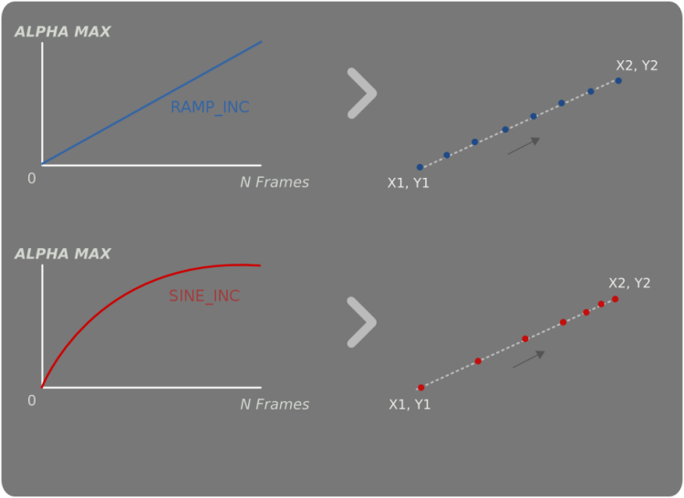

| Top |
| void | clutter_behaviour_apply () |
| void | clutter_behaviour_remove () |
| void | clutter_behaviour_remove_all () |
| gboolean | clutter_behaviour_is_applied () |
| void | (*ClutterBehaviourForeachFunc) () |
| void | clutter_behaviour_actors_foreach () |
| GSList * | clutter_behaviour_get_actors () |
| gint | clutter_behaviour_get_n_actors () |
| ClutterActor * | clutter_behaviour_get_nth_actor () |
| ClutterAlpha * | clutter_behaviour_get_alpha () |
| void | clutter_behaviour_set_alpha () |
GObject
╰── ClutterBehaviour
├── ClutterBehaviourDepth
├── ClutterBehaviourEllipse
├── ClutterBehaviourOpacity
├── ClutterBehaviourPath
├── ClutterBehaviourRotate
╰── ClutterBehaviourScale
ClutterBehaviour is the base class for implementing behaviours. A behaviour is a controller object for ClutterActors; you can use a behaviour to control one or more properties of an actor (such as its opacity, or its position). A ClutterBehaviour is driven by an "alpha function" stored inside a ClutterAlpha object; an alpha function is a function depending solely on time. The alpha function computes a value which is then applied to the properties of the actors driven by a behaviour.
Clutter provides some pre-defined behaviours, like ClutterBehaviourPath, which controls the position of a set of actors making them "walk" along a set of nodes; ClutterBehaviourOpacity, which controls the opacity of a set of actors; ClutterBehaviourScale, which controls the width and height of a set of actors.
To visualize the effects of different alpha functions on a ClutterBehaviour implementation it is possible to take the ClutterBehaviourPath as an example:

The actors position between the path's end points directly correlates to the ClutterAlpha's current alpha value driving the behaviour. With the ClutterAlpha's function set to a linear ramp the actor will follow the path at a constant velocity, but when changing to a sine wave the actor initially accelerates before quickly decelerating.
In order to implement a new behaviour you should subclass ClutterBehaviour and override the "alpha_notify" virtual function; inside the overridden function you should obtain the alpha value from the ClutterAlpha instance bound to the behaviour and apply it to the desiderd property (or properties) of every actor controlled by the behaviour.
ClutterBehaviour is available since Clutter 0.2.
ClutterBehaviour and its sub-classes have been discouraged sing Clutter 1.0, and formally deprecated since Clutter 1.6. You should use the implicit animation support inside ClutterActor if you still have code using ClutterBehaviour.
void clutter_behaviour_apply (ClutterBehaviour *behave,ClutterActor *actor);
clutter_behaviour_apply has been deprecated since version 1.6 and should not be used in newly-written code.
Applies behave
to actor
. This function adds a reference on
the actor.
Since: 0.2
void clutter_behaviour_remove (ClutterBehaviour *behave,ClutterActor *actor);
clutter_behaviour_remove has been deprecated since version 1.6 and should not be used in newly-written code.
Removes actor
from the list of ClutterActors to which
behave
applies. This function removes a reference on the actor.
Since: 0.2
void
clutter_behaviour_remove_all (ClutterBehaviour *behave);
clutter_behaviour_remove_all has been deprecated since version 1.6 and should not be used in newly-written code.
Removes every actor from the list that behave
holds.
Since: 0.4
gboolean clutter_behaviour_is_applied (ClutterBehaviour *behave,ClutterActor *actor);
clutter_behaviour_is_applied has been deprecated since version 1.6 and should not be used in newly-written code.
Check if behave
applied to actor
.
Since: 0.4
void (*ClutterBehaviourForeachFunc) (ClutterBehaviour *behaviour,ClutterActor *actor,gpointer data);
ClutterBehaviourForeachFunc has been deprecated since version 1.6 and should not be used in newly-written code.
This function is passed to clutter_behaviour_actors_foreach() and
will be called for each actor driven by behaviour
.
behaviour |
the ClutterBehaviour |
|
actor |
an actor driven by |
|
data |
optional data passed to the function. |
[closure] |
Since: 0.2
void clutter_behaviour_actors_foreach (ClutterBehaviour *behave,ClutterBehaviourForeachFunc func,gpointer data);
clutter_behaviour_actors_foreach has been deprecated since version 1.6 and should not be used in newly-written code.
Calls func
for every actor driven by behave
.
behave |
||
func |
a function called for each actor. |
[scope call] |
data |
optional data to be passed to the function, or |
Since: 0.2
GSList *
clutter_behaviour_get_actors (ClutterBehaviour *behave);
clutter_behaviour_get_actors has been deprecated since version 1.6 and should not be used in newly-written code.
Retrieves all the actors to which behave
applies. It is not recommended
for derived classes to use this in there alpha notify method but use
clutter_behaviour_actors_foreach as it avoids alot of needless allocations.
a list of
actors. You should free the returned list with g_slist_free() when
finished using it.
[transfer container][element-type Clutter.Actor]
Since: 0.2
gint
clutter_behaviour_get_n_actors (ClutterBehaviour *behave);
clutter_behaviour_get_n_actors has been deprecated since version 1.6 and should not be used in newly-written code.
Gets the number of actors this behaviour is applied too.
Since: 0.2
ClutterActor * clutter_behaviour_get_nth_actor (ClutterBehaviour *behave,gint index_);
clutter_behaviour_get_nth_actor has been deprecated since version 1.6 and should not be used in newly-written code.
Gets an actor the behaviour was applied to referenced by index num.
Since: 0.2
ClutterAlpha *
clutter_behaviour_get_alpha (ClutterBehaviour *behave);
clutter_behaviour_get_alpha has been deprecated since version 1.6 and should not be used in newly-written code.
Retrieves the ClutterAlpha object bound to behave
.
a ClutterAlpha object, or NULL if no alpha
object has been bound to this behaviour.
[transfer none]
Since: 0.2
void clutter_behaviour_set_alpha (ClutterBehaviour *behave,ClutterAlpha *alpha);
clutter_behaviour_set_alpha has been deprecated since version 1.6 and should not be used in newly-written code.
Binds alpha
to a ClutterBehaviour. The ClutterAlpha object
is what makes a behaviour work: for each tick of the timeline
used by ClutterAlpha a new value of the alpha parameter is
computed by the alpha function; the value should be used by
the ClutterBehaviour to update one or more properties of the
actors to which the behaviour applies.
If alpha
is not NULL, the ClutterBehaviour will take ownership
of the ClutterAlpha instance.
Since: 0.2
typedef struct _ClutterBehaviour ClutterBehaviour;
ClutterBehaviour has been deprecated since version 1.6 and should not be used in newly-written code.
ClutterBehaviour contains only private data and should be accessed with the functions below.
Since: 0.2
struct ClutterBehaviourClass {
/* vfunc, not signal */
void (*alpha_notify) (ClutterBehaviour *behave,
gdouble alpha_value);
/* signals */
void (*applied) (ClutterBehaviour *behave,
ClutterActor *actor);
void (*removed) (ClutterBehaviour *behave,
ClutterActor *actor);
};
ClutterBehaviourClass has been deprecated since version 1.6 and should not be used in newly-written code.
Base class for behaviours.
virtual function, called each time the ClutterAlpha computes a new alpha value; the actors to which the behaviour applies should be changed in this function. Every subclass of ClutterBehaviour must implement this virtual function |
||
signal class handler for the ClutterBehaviour::applied signal |
||
signal class handler for the ClutterBehaviour::removed signal |
Since: 0.2
“alpha” property“alpha” ClutterAlpha *
The ClutterAlpha object used to drive this behaviour. A ClutterAlpha object binds a ClutterTimeline and a function which computes a value (the "alpha") depending on the time. Each time the alpha value changes the alpha-notify virtual function is called.
ClutterBehaviour:alpha has been deprecated since version 1.6 and should not be used in newly-written code.
Flags: Read / Write
Since: 0.2
“applied” signalvoid user_function (ClutterBehaviour *behaviour, ClutterActor *actor, gpointer user_data)
The ::apply signal is emitted each time the behaviour is applied to an actor.
ClutterBehaviour::applied has been deprecated since version 1.6 and should not be used in newly-written code.
behaviour |
the ClutterBehaviour that received the signal |
|
actor |
the actor the behaviour was applied to. |
|
user_data |
user data set when the signal handler was connected. |
Flags: Run First
Since: 0.4
“removed” signalvoid user_function (ClutterBehaviour *behaviour, ClutterActor *actor, gpointer user_data)
The ::removed signal is emitted each time a behaviour is not applied to an actor anymore.
ClutterBehaviour::removed has been deprecated since version 1.6 and should not be used in newly-written code.
behaviour |
the ClutterBehaviour that received the signal |
|
actor |
the removed actor |
|
user_data |
user data set when the signal handler was connected. |
Flags: Run First
Since: 0.4